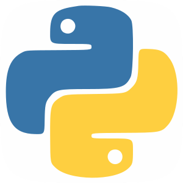

LENGUAJES DE PROGRAMACIÓN
Python
Python es un lenguaje de alto nivel de programación interpretado cuya filosofía hace hincapié en la legibilidad de su código, se utiliza para desarrollar aplicaciones de todo tipo, ejemplos: Instagram, Netflix, Spotify, Panda3D, entre otros.
Hello World
# Python code
print("Hello World")
PHP
PHP es un lenguaje de programación interpretado del lado del servidor y de uso general que se adapta especialmente al desarrollo web. Fue creado inicialmente por el programador danés-canadiense Rasmus Lerdorf en 1994. En la actualidad, la implementación de referencia de PHP es producida por The PHP Group.
Hello World
<?php
echo "Hello World";
?>
Java
Este lenguaje orientado a objetos funciona independientemente de la plataforma de hardware, entonces, el código escrito en una máquina corre en otra, sin problemas. Incluso, si los sistemas operativos son diferentes, el código Java funciona gracias a la Máquina Virtual Java o JVM, por las siglas en inglés.

Hello World
class Main {
public static void main(String[] args) {
System.out.println("Hello World");
}
}
JavaScript
Otro lenguaje de programación orientado a objetos. Como es interpretado, no necesita compilación, entonces los navegadores leen el código y ejecutan las acciones indicadas. Esta característica, lo hace idóneo para crear páginas o aplicaciones web, con elementos interactivos o más visuales, de allí su relevancia en el desarrollo de videojuegos.

Hello World
console.log("Hello World");
C#
C# es un lenguaje de programación muy versátil, creado por Microsoft, con características similares al Lenguaje C, pero orientado a objetos. Es muy usado en la industria de los juegos, robótica, impresión 3D, internet de las cosas y desarrollo de aplicaciones web y móviles. Así como también, en el desarrollo de aplicaciones nativas para Microsoft, iOS y Android, como controladores y aplicaciones de escritorio.
Hello World
using System;
class MainClass {
public static void Main (string[] args) {
Console.WriteLine("Hello World");
}
}
Ruby
Ruby es un lenguaje de programación interpretado, reflexivo y orientado a objetos, creado por el programador japonés Yukihiro "Matz" Matsumoto, quien comenzó a trabajar en Ruby en 1993, y lo presentó públicamente en 1995
Hello World
puts "Hello World"